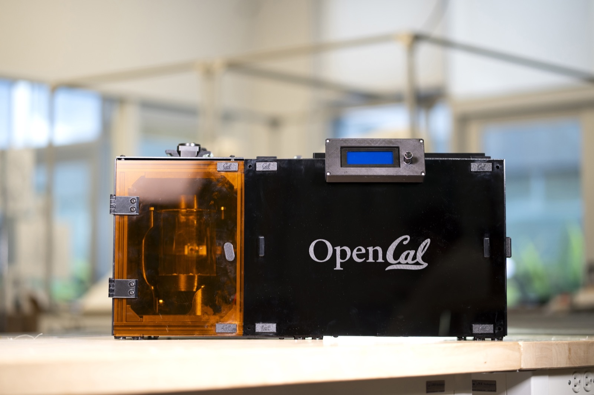
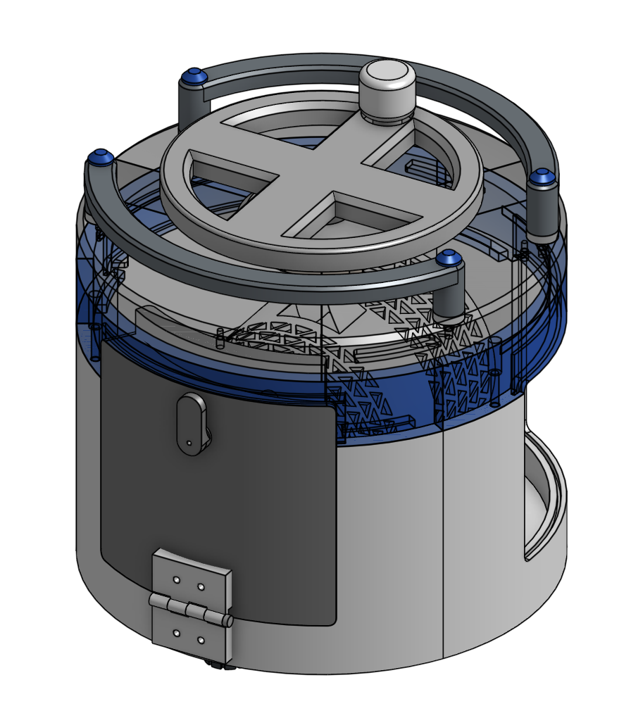
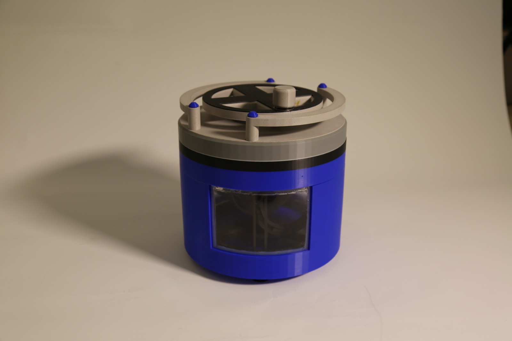
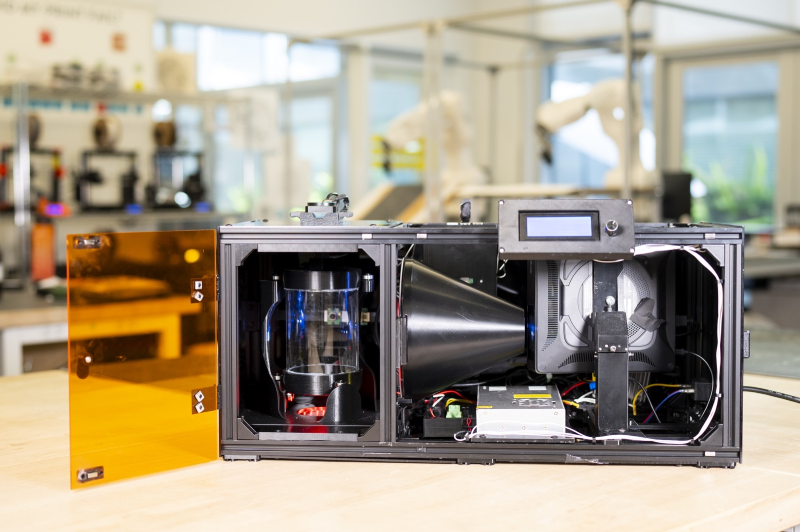
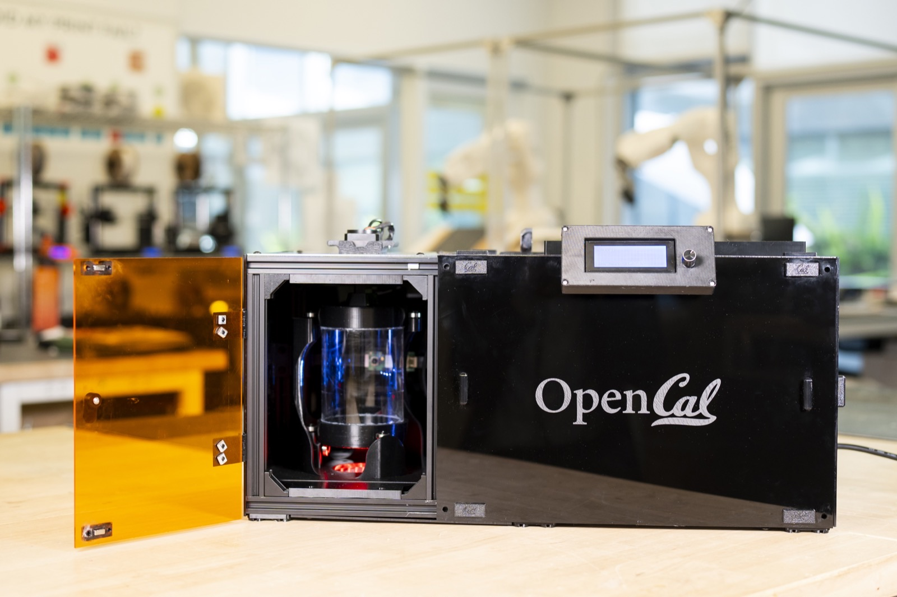

2025–26 • MEng Capstone • UC Berkeley

OpenCAL is an open-source Computed Axial Lithography (CAL) printer—a volumetric additive manufacturing platform that cures photopolymer resin in a single step rather than building parts layer-by-layer. Unlike conventional SLA or FFF systems, CAL uses a visible-light projector and a rotating resin vial to form complete 3D geometries at once, enabling faster print times and more complex internal features without traditional support structures.
Our MEng capstone team at UC Berkeley designed OpenCAL to broaden access to CAL beyond well-funded research labs. The system is built from commercial off-the-shelf components and 3D-printed parts for assembly with minimal tooling, paired with open-source software for projection image generation and printer control.
I helped design and fabricate a novel instant, layerless 3D printer for this master's capstone, with a focus on precision mechanisms and system integration—from concept through a working physical platform.
Printed CAL parts emerge coated in uncured resin, so effective post-processing is essential for usability. I designed CentrifuCAL, a companion centrifugal cleaning module built almost entirely from 3D-printed components. It spins finished parts to separate excess resin and support part finishing—integrating with the OpenCAL workflow as a practical, makerspace-friendly post-processing solution.

CentrifuCAL CAD design

Fabricated CentrifuCAL module
We released OpenCAL under an open-source license so research groups, educators, and hobbyists can build and adapt the platform. Hardware designs, bills of materials, and Python-based control software are available on GitHub, with documentation at Read the Docs.
As the platform gained traction, I supported external builders troubleshooting assembly and mechanical integration—helping early community adoption as groups began replicating the system in academic makerspaces.
Advisors: Hayden Taylor, Taylor Waddell
Capstone team: Maya Lund, Wangari Mbuthia, Paul Morenkov, Zev Schuman, Bryan Vu
We delivered a working CAL printing and post-processing platform, open-sourced the full stack for non-commercial research and education, and began community adoption—with external builders replicating the system and a pilot deployment planned for UC Berkeley's Jacobs Makerspace.

Full system with enclosure open for service access

Enclosure door open showing internal layout